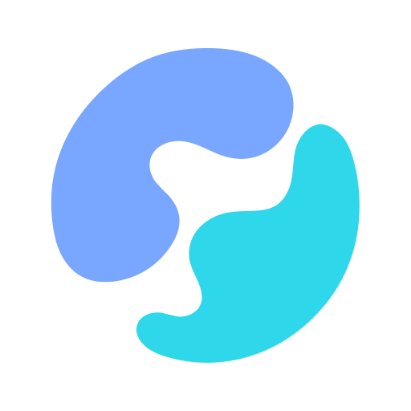

特殊回执
Skill failed / delivered 等明确产品语义。

OmniMind · Tool UI ProjectionTOOL PRESENTATION / RESEARCH COMPANION
图标表达稳定身份，文字表达具体动作，状态表达当前结果。Read 使用开卷，Search 使用放大镜；所有 Engine 投影到 canonical User Input 的 Ask 统一使用双气泡，不以 Pi Tool 名为 UI authority。Browser、OmniMind Gateway、GitHub MCP 等 surface/品牌 identity 保持更高优先级。
13px 文字 · 14px 图标 · 同一 leading column
user-input.requested 显示为 circle-questionmark。主会话应以 canonical activity 为唯一 Ask icon owner，使所有 Engine 自动共享 Central bubbles；还必须证明 Pi 的原始 Tool lifecycle 与 canonical request 不会重复出行。Question card 不重复加图标。
identity icon 不随 lifecycle 改变
native source → adapter → user-input.requested → bubbles
user-input.requested 后零 Web 改动获得同一投影；相似名字的第三方 Tool 不会冒充 Product Ask。Approval、Plan exit、OAuth 与 Browser 网页输入虽然也可能“等人”，但不属于 User Input，不使用双气泡。Pi 还需通过 structured correlation / bundled provenance 避免 Tool row 与 canonical row 重复，不做 Web 字符串去重。
22 Browser actions · 28 Gateway actions
每个 action 都显示 globe。动作名由 canonical Browser presentation 提供，icon 不按 click/read/type 再分叉。
每个 action 都显示 OmniMind mark。内部 read/create/wait/update 动词不覆盖产品 surface identity。
从最具体到最安全的 fallback
Skill failed / delivered 等明确产品语义。
user-input.requested → double bubbles。
GitHub、Browser、OmniMind、MCP。
read、edit、command、image、agent。
Read aliases、WebFetch URL、wrapped shell。
只有没有更强 identity 时才兜底。
不属于普通 Tool lifecycle